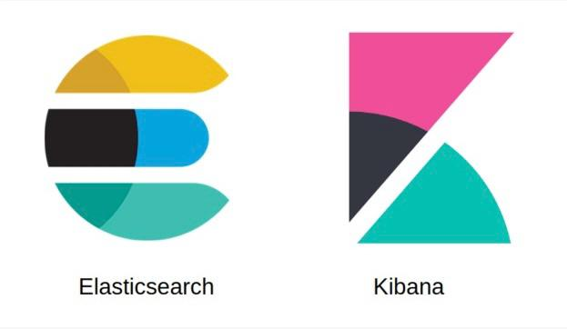
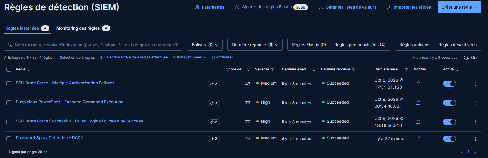
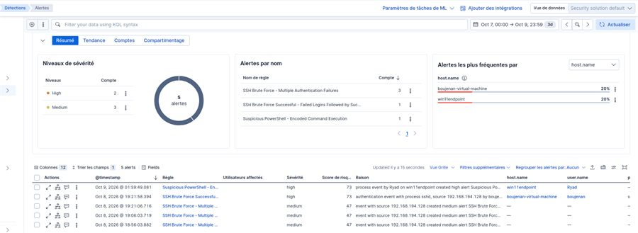
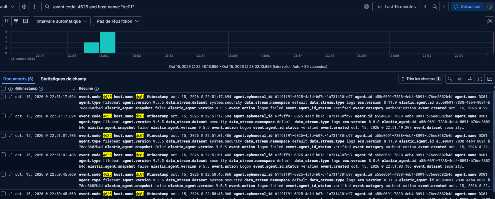
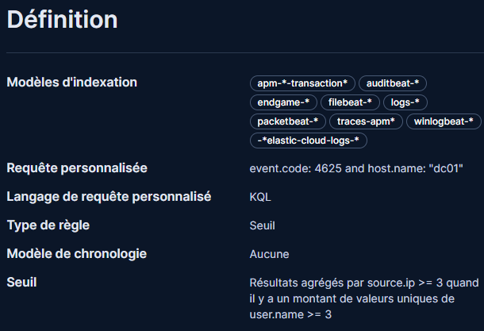
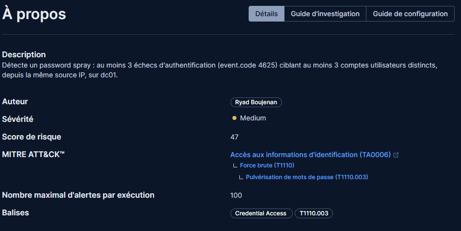
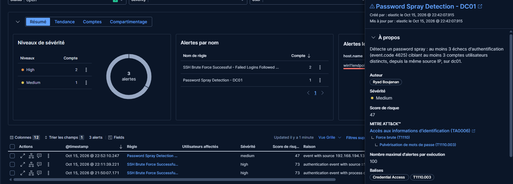

CASE Nº1Lab SOC Elastic Security
A detection environment built in a lab: 4 custom rules, tested with simulated attacks on Linux and Windows machines.
Read the case in detailCollapse the detail
- Objective
- Practise detection on my own data rather than on prepared log datasets.
- Outcome
- 4 rules validated across 3 attack scenarios, an investigation guide per rule, and the whole lab documented on GitHub.
Detection rules overview


Context
I wanted to practise detection on my own data rather than on prepared log datasets. So I built a detection environment in a lab, from event collection through to alert investigation, then simulated attacks on Linux and Windows machines to write and test the matching rules.
What I did
- Deployed the Elasticsearch + Kibana stack with Fleet, and enrolled Elastic Agents on Ubuntu, Windows 11 and a Windows Server domain controller.
- Instrumented the Windows hosts with Sysmon and enabled PowerShell Script Block Logging to capture the events the detections depend on.
- Wrote and tested 4 detection rules covering 3 simulated attack scenarios, then tuned the rules to limit false positives.
- Wrote an investigation guide for every rule: what the alert means, which fields to check first, and the triage steps.
- Documented the whole lab on GitHub so that it can be reproduced.
The 3 detection scenarios
-
SSH brute force (Linux)
Detects repeated authentication failures from a single source, then correlates in EQL the sequence "multiple failures followed by a successful login" — the signal that separates an attempt from a likely compromise.
-
Obfuscated PowerShell (Windows 11)
MITRE ATT&CK T1059.001Detects base64-encoded commands passed to PowerShell, using the script blocks captured by Script Block Logging.
-
Active Directory password spray (Windows Server)
MITRE ATT&CK T1110.003A KQL threshold rule on Event ID 4625 from the domain controller, aggregated by
source.ipwith a cardinality condition onuser.name: that condition is what separates a password spray — many accounts tried, few attempts on each — from a classic brute force against a single account.
The raw events: failed logons (event.code 4625) on dc01, in Kibana Discover 
The rule: KQL query, Threshold type, grouped by source.ip 
Medium severity (score 47) and MITRE ATT&CK mapping: Brute Force (T1110) › Password Spraying (T1110.003) 
The "Password Spray Detection - DC01" alert raised, with its detail